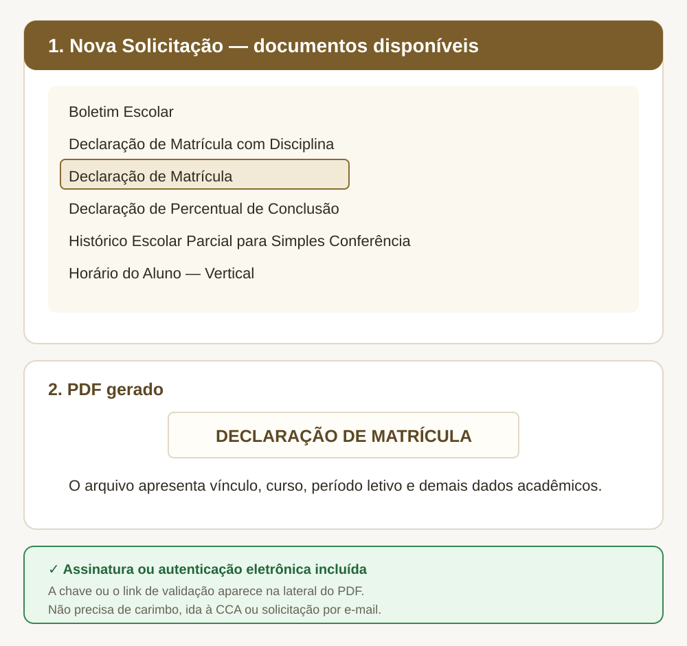
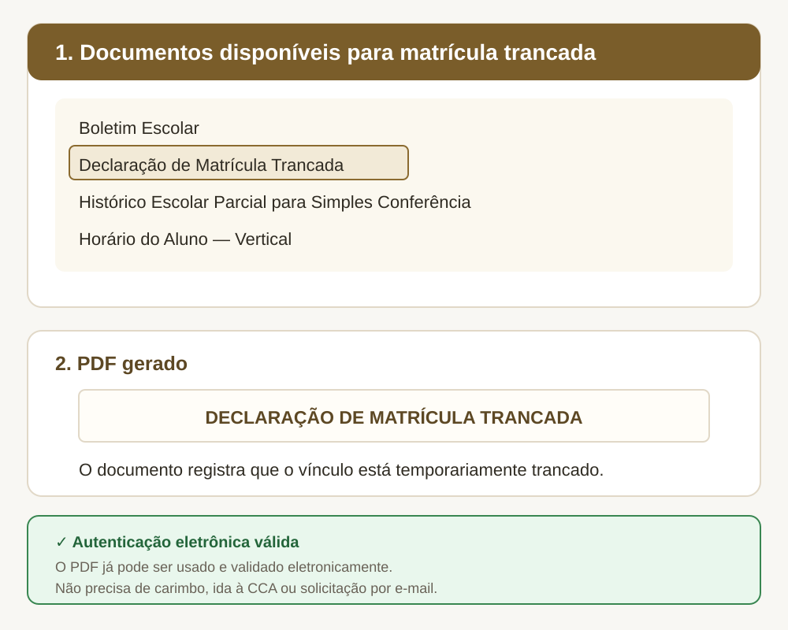

Passo a passo
- Acesse o Q-Acadêmico e escolha o módulo ALUNO.
- Entre com matrícula e senha.
- No menu principal, clique em Solicitar Documentos.
- Clique em Nova Solicitação.
- Escolha o documento e, quando solicitado, selecione o período letivo.
- Clique em Solicitar Documento e baixe o PDF.
Emita diretamente no sistema
Estou regularmente matriculado
Para estudantes de curso técnico ou de graduação com situação ativa, o sistema disponibiliza:
- Boletim Escolar;
- Declaração de Matrícula com Disciplina;
- Declaração de Matrícula;
- Declaração de Percentual de Conclusão;
- Histórico Escolar Parcial para Simples Conferência;
- Horário do Aluno — Vertical.

Minha matrícula está trancada
Para quem está com matrícula trancada, o sistema disponibiliza:
- Boletim Escolar;
- Declaração de Matrícula Trancada;
- Histórico Escolar Parcial para Simples Conferência;
- Horário do Aluno — Vertical.

Como comprovar a autenticidade
A chave ou o link de validação aparece na lateral do PDF. A pessoa ou instituição que receber o arquivo pode conferir o documento no módulo VALIDAR DOCUMENTOS do próprio Q-Acadêmico.
Prefere acompanhar tudo em um único arquivo?
Escolha o tutorial correspondente à situação registrada no Q-Acadêmico.
Perguntas frequentes
Regularmente matriculado
O documento emitido pelo sistema tem a mesma validade de um assinado na CCA?
Sim. A autenticação eletrônica confere validade ao documento e dispensa assinatura manual ou carimbo. A conferência é feita pela chave impressa no próprio arquivo.
A empresa ou instituição está exigindo um documento carimbado. O que fazer?
Oriente o destinatário a validar o arquivo no módulo VALIDAR DOCUMENTOS do Q-Acadêmico, informando a chave de verificação impressa no PDF. A conferência no sistema oficial substitui o carimbo.
Preciso escolher o período letivo. Qual devo marcar?
Para comprovar a situação atual, escolha o período letivo em curso. Períodos anteriores servem para documentos retroativos, como o boletim de um semestre já encerrado.
Posso emitir a Declaração de Matrícula se a minha situação for “Trancado”?
Não. A Declaração de Matrícula atesta vínculo ativo e só é liberada para quem está com situação “Matriculado”. Com a matrícula trancada, o sistema disponibiliza a Declaração de Matrícula Trancada, que reflete a situação acadêmica real.
O documento que preciso não aparece na lista. E agora?
A lista varia conforme a situação registrada no sistema. Se o documento não estiver disponível para o seu perfil, ou se a solicitação não for concluída, entre em contato com a CCA pelo e-mail cca.baturite@ifce.edu.br, informando nome completo, matrícula, curso e o documento pretendido.
Matrícula trancada
Por que não consigo emitir a Declaração de Matrícula comum?
Porque ela atesta vínculo ativo. Com a matrícula trancada, o sistema libera a Declaração de Matrícula Trancada, que reflete a sua situação acadêmica real. Emitir um documento que declare vínculo ativo seria uma informação incorreta.
A declaração de matrícula trancada serve para comprovar vínculo com o IFCE?
Sim. O trancamento suspende os estudos, mas não rompe o vínculo institucional. O documento comprova exatamente isso: você continua vinculado, com os estudos temporariamente interrompidos.
O documento emitido pelo sistema tem a mesma validade de um assinado na CCA?
Sim. A autenticação eletrônica confere validade ao documento e dispensa assinatura manual ou carimbo. A conferência é feita pela chave impressa no próprio arquivo.
Preciso do meu histórico de notas anteriores ao trancamento. Como faço?
Na mesma tela, selecione Histórico Escolar Parcial para Simples Conferência. Ele reúne as disciplinas cursadas até o trancamento.
Vou reativar a matrícula. Preciso de algum documento daqui?
Não. A reativação de matrícula é um pedido que depende de protocolo e análise, feito pelo SEI. Consulte a área do SEI nos Guias da CCA ou procure a Coordenadoria pelo e-mail cca.baturite@ifce.edu.br.